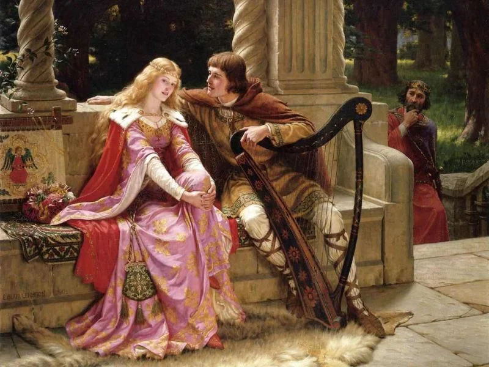
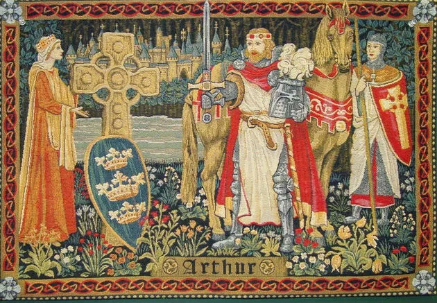

Contexto histórico
O Trovadorismo foi a primeira manifestação literária da língua portuguesa, surgida na Idade Média, entre os séculos XII e XIV. Período esse em que a Igreja Católica tinha controle sob a Europa e o teocentrismo dominava, isto é, Deus está no centro do mundo, e o homem está a mercê dos valores cristão.Este movimento é conhecido pelas composições poéticas acompanhadas de música, denominadas "cantigas". Uma das cantigas que deslanchou o movimento em território português foi a Cantiga da Ribeirinha(1189) de Paio Soares de Taveirós, escrita em galego-português, o que dificulta um pouco a leitura, como nesse trecho:
“No mundo non me sei parelha,
mentre me for' como me vai,
ca ja moiro por vós - e ai!
mia senhor branca e vermelha,
Queredes que vos retraia
quando vos eu vi em saia!
Mao dia me levantei, que vos
enton non vi fea!”
Traduzindo para o nosso português:
“No mundo ninguém se assemelha a mim,
enquanto a minha vida continuar como está,
porque morro por ti e ai
minha senhora de pele alva e faces rosadas
quereis que eu vos descreva (retrate)
quanto eu vos vi sem manto! (roupa íntima)
Maldito dia! me levantei,
que não vos vi feia! (ou seja, viu a mais bela).”

Características do Trovadorismo
A característica mais marcante desse movimento é sem sombra de dúvidas a união da poesia com a música (criando as cantigas), onde as poesias eram escritas com o intuito de serem cantadas, acompanhadas por instrumentos musicais como viola e flauta. Trovador era quem escrevia as poesias, jogral era quem as declamava e o menestrel, recitava e tocava instrumentos, estando acima do jogral em uma espécie de ‘hierarquia’. As cantigas são divididas em cantigas de amor, de amigo, e de escárnio, seguindo tais características:
Cantigas de amor
Expressam o amor cortês, onde o eu-lírico geralmente sofre pelo amor inalcançável de uma dama. Temos como exemplo, a cantiga mostrada acima no contexto.
Cantigas de amigo
Caracterizadas pela simplicidade e pelo eu-lírico feminino, onde a mulher lamenta a ausência do amado. Como por exemplo, esse trecho de Ai Deus, se sab’ora meu amigo de Martin Codax:
“Ai Deus, se sab'ora meu amigo
com'eu senheira estou em Vigo!
E vou namorada...
Ai Deus, se sab'ora meu amado
com'eu em Vigo senheira manho!
E vou namorada...
Com'eu senheira estou em Vigo
e nulhas gardas nom hei comigo!
E vou namorada…”
Cantigas de Escárnio e Maldizer
Composições satíricas que criticam de forma velada ou indireta (escárnio) ou de forma direta (maldizer) personagens e situações da época. Podemos citar como exemplo de cantiga de escárnio, um trecho de "A Dom Foam quer’eu gram mal" de João Garcia de Guilhade:
“A Dom Foam quer'eu gram mal
e quer'a sa molher gram bem;
gram sazom há que m'est'avém
e nunca i já farei al;
ca, desquand'eu sa molher vi,
se púdi, sempre a servi
e sempr'a ele busquei mal.
Quero-me já maenfestar,
e pesará muit'[a] alguém,
mais, sequer que moira por en,
dizer quer'eu do mao mal
e bem da que mui bõa for,
qual nom há no mundo melhor,
quero-[o] já maenfestar.”
Na cantiga de escárnio acima, o eu lírico elogia uma mulher e ataca seu marido, o que nos leva a interpretar que seria a vivência de um amor cortês, isso é, onde se eleva o nível de sua amada ao quase divino.
Já como uma de maldizer, ou seja, que critica ofensivamente de forma direta, podemos citar um trecho de "A mim dam preç, e nom é desguisado" de Afonso Anes do Cotom:
A mim dam preç', e nom é desguisado,
dos maltalhados, e nom erram i;
Joam Fernandes, o mour', outrossi,
nos maltalhados o vejo contado;
e pero maltalhados semos [n]ós,
s'homem visse Pero da Ponte em cós,
semelhar-lh'-ia moi peor talhado.
Na cantiga breve de maldizer acima, o eu lírico compara o aspecto físico de três homens maljeitosos, sendo eles Cotom, João Fernandes e Pero da Ponte.
Novelas de Cavalaria
As novelas de cavalaria são outro gênero literário que foi produzido durante o Trovadorismo. São derivações dos poemas épicos, são longas e escritas em prosa, relatam fantásticas aventuras de heróis destemidos, cavaleiros medievais que lutavam com bravura diversas batalhas, enfrentando mostros a caminho da glória. Conta com algumas características como grande extensão e divisão em capítulos, aborda temas mitológicos, possuem caráter místicos, apresentam visão teocêntrica e têm como personagens cavaleiros e donzelas. Um exemplo de novela de cavalaria é a história de Rei Arthur, o rei dos Bretões;
